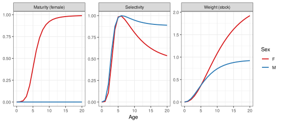
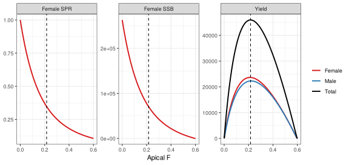
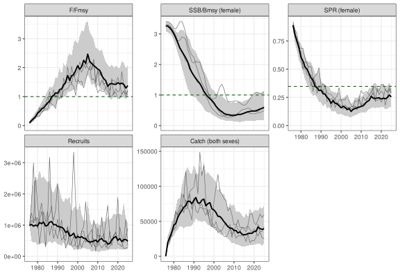

A sex-structured operating model with reference points
Source:vignettes/floss-06-sex-structured.Rmd
floss-06-sex-structured.RmdMany stocks are sexually dimorphic: females grow larger and live
longer than males. This guide builds a sex-structured operating
model as an ordinary FLStock with the sexes in the
unit dimension ("F", "M"), with a
stock-recruitment relationship and reference points that account
for both sexes. It is the operating model for testing
sex-structured length-based assessments (FLicc) and harvest control
rules in a data-limited MSE.
The example is a dimorphic stock: females reach Linf 60 cm (k 0.15), males 45 cm (k 0.25), M = 0.3 for both, one trawl fishery with dome-shaped selectivity and a survey that samples both sexes.
library(FLOSS)
library(FLasher) # fwd(), fwdControl()
library(FLBRP) # brp(), for the one-sex check
library(ggplot2)General settings
As in the FLicc MSE operating models (e.g. splendid alfonsino): historical years, iterations, recruitment variability and the years with length samples.
set.seed(1234)
hist_years <- 1976:2025
nsim <- 50
rho <- 0.30 # recruitment autocorrelation
sigR <- 0.50 # recruitment SD (log scale)
lfd_years <- 2006:2025 # years with length samplesHow the sexes work in FLR. FLasher projects an
FLStock with units: recruitment follows the summed spawning
output of all units and recruits are split equally between them. With
male maturity set to 0, the spawning output is female spawning biomass
and the sex ratio at recruitment is 0.5. Fishing is controlled through
effort: F at age = effort x harvest pattern, with the
pattern scaled to a maximum of 1 over both sexes, so effort is
the apical F at length shared by the sexes, the same F as in
FLicc. FLBRP does not handle units, so the reference points here are
computed from the sex-structured equilibrium and checked against
deterministic projections.
Life history and the stock
lh_sex() takes the female life history and the male
values that differ. Maturity is logistic at length (L50,
L95; default L95 = L50 + 0.2 Linf, as FLicc)
and length at age is normal around the von Bertalanffy mean with a CV of
cvl (default 0.1).
lh <- lh_sex(list(linf = 60, k = 0.15, t0 = -0.3, a = 1e-5, b = 3, L50 = 35, M = 0.3),
linf = 45, k = 0.25, L50 = 28)
str(lh$M)
#> List of 9
#> $ linf: num 45
#> $ k : num 0.25
#> $ t0 : num -0.3
#> $ a : num 1e-05
#> $ b : num 3
#> $ L50 : num 28
#> $ M : num 0.3
#> $ cvl : num 0.1
#> $ L95 : num 37stock_sex() builds the FLStock: maturity,
weights and selectivity at age by sex come from the length-based
functions integrated over the length distribution at each age (stock
weights at the start of the year, catch weights and selectivity at
mid-year). Selectivity is defined at length, so the smaller males are
less selected at the same age.
sel <- list(Trawl = selectivity("dnormal", Lpeak = 34, sd_left = 6, sd_right = 20))
stk <- stock_sex(lh, sel, tmax = 20, years = hist_years)
stk
#> An object of class "FLStock"
#>
#> Name:
#> Description:
#> Quant: age
#> Dims: age year unit season area iter
#> 21 50 2 1 1 1
#>
#> Range: min max pgroup minyear maxyear minfbar maxfbar
#> 0 20 20 1976 2025 1 19
#>
#> Metrics:
#> rec: 1 - 1 (NA)
#> ssb: 19 - 19 (NA)
#> catch: NA - NA (NA)
#> fbar: 0.66 - 0.83 (f)
bio <- rbind(
data.frame(as.data.frame(stock.wt(stk)[, "2025"]), what = "Weight (stock)"),
data.frame(as.data.frame(mat(stk)[, "2025"]), what = "Maturity (female)"),
data.frame(as.data.frame(harvest(stk)[, "2025"]), what = "Selectivity"))
ggplot(bio, aes(age, data, colour = unit)) + geom_line(linewidth = 0.9) +
facet_wrap(~what, scales = "free_y") +
scale_colour_manual(values = c(F = "#D7191C", M = "#2C7BB6")) +
labs(x = "Age", y = NULL, colour = "Sex") + theme_bw()
Stock-recruitment and reference points
sr_sex() gives a Beverton-Holt relationship on female
spawning biomass, parameterised by steepness and unfished recruitment
(both sexes). Only a and b are stored in the
model: FLasher reads every parameter of the model, and extra parameters
(such as s or R0) change the recruitment it
computes.
sr <- sr_sex(stk, s = 0.7, R0 = 1e6)
params(sr); attr(sr, "pars")
#> An object of class "FLPar"
#> params
#> a b
#> 1120000 31579
#> units: NA
#> s R0 B0
#> 0.7 1000000.0 263155.0refpts_sex() computes the equilibrium for apical F:
per-recruit numbers by sex, recruits split equally, female SSB per
recruit, yield of both sexes, and the equilibrium recruitment from the
stock-recruitment relationship. MSY is the maximum of the yield of both
sexes; Bmsy and B0 are female spawning biomass.
rp <- refpts_sex(stk, sr)
round(rp, 3)
#> An object of class "FLPar"
#> params
#> Fmsy Bmsy MSY B0 R0 Fcrash SPRmsy Bmsy_B0
#> 2.16e-01 7.07e+04 4.59e+04 2.63e+05 1.00e+06 5.97e-01 3.47e-01 2.69e-01
#> Fspr30 Fspr40
#> 2.53e-01 1.82e-01
#> units: NA
eq <- eq_sex(stk, sr, F = seq(0, 0.6, by = 0.005))
eql <- rbind(data.frame(F = eq$F, value = eq$yield_F, what = "Yield", sex = "Female"),
data.frame(F = eq$F, value = eq$yield_M, what = "Yield", sex = "Male"),
data.frame(F = eq$F, value = eq$yield, what = "Yield", sex = "Total"),
data.frame(F = eq$F, value = eq$ssb, what = "Female SSB", sex = "Female"),
data.frame(F = eq$F, value = eq$spr, what = "Female SPR", sex = "Female"))
ggplot(eql, aes(F, value, colour = sex)) + geom_line(linewidth = 0.9) +
geom_vline(xintercept = an(rp["Fmsy"]), linetype = 2) +
facet_wrap(~what, scales = "free_y") +
scale_colour_manual(values = c(Female = "#D7191C", Male = "#2C7BB6", Total = "black")) +
labs(x = "Apical F", y = NULL, colour = NULL) + theme_bw()
Check 1: deterministic projections.
refpts_fwd_sex() finds Fmsy as in the usual brute-force
approach: long FLasher projections at constant F without recruitment
deviations, maximising the final catch. It gives the same answer as the
equilibrium, about 100 times more slowly:
rbind(equilibrium = c(rp[c("Fmsy", "Bmsy", "MSY")]),
projection = c(refpts_fwd_sex(stk, sr, nyears = 100)))
#> [,1] [,2] [,3]
#> equilibrium 0.2160574 70724.68 45942.76
#> projection 0.2160589 70724.12 45942.79Check 2: one sex. With identical sexes the reference points are those of FLBRP for the equivalent one-sex stock (recruitment halved, as only the female half spawns):
stk1 <- stock_sex(lh_sex(lh$F), sel, tmax = 20, years = 2023:2025)
sr1 <- sr_sex(stk1, s = 0.7, R0 = 1e6)
one <- stk1[, , "F"]
b1 <- brp(FLBRP(one, sr = list(model = bevholt()$model,
params = FLPar(a = an(params(sr1)["a"]) / 2, b = an(params(sr1)["b"])))))
fb <- mean(harvest(one)[ac(range(one)["minfbar"]:range(one)["maxfbar"]), 1])
rbind(refpts_sex = c(refpts_sex(stk1, sr1)[c("Fmsy", "Bmsy", "MSY")]),
FLBRP = c(an(refpts(b1)["msy", "harvest"]) / fb, an(refpts(b1)["msy", "ssb"]),
2 * an(refpts(b1)["msy", "yield"])))
#> [,1] [,2] [,3]
#> refpts_sex 0.2109048 72429.95 47316.65
#> FLBRP 0.2109048 72429.95 47316.65Historical operating model
The historical apical F follows the up-down-constant pattern of
FLRef::fudc() relative to Fmsy, with yearly variation
(sigmaF) and an extra lognormal spread between iterations;
recruitment deviations are AR1 lognormal (rlnormar1()).
fapic_fudc() wraps fudc() on the scale of the
apical F. om_sex() starts each iteration in equilibrium at
its first-year F and projects it with FLasher under apical F
(effort).
fmsy <- rp["Fmsy"]
f_hist <- fapic_fudc(hist_years, nsim, fref = fmsy, f0 = 0.1, fhi = 2.5, flo = 1.5,
sigmaF = 0.15, breaks = c(0.6, 0.8), spread = 0.2)
rec_devs <- rlnormar1(rho = rho, years = hist_years, n = nsim, meanlog = 0, sdlog = sigR)
om <- om_sex(stk, sr, fapic = f_hist, deviances = rec_devs)
om$stock@refpts
#> An object of class "FLPar"
#> params
#> Fmsy Bmsy MSY B0 Fspr40
#> 2.16e-01 7.07e+04 4.59e+04 2.63e+05 1.82e-01
#> units: NA
plot_om_sex(om)
om$stock is an FLStockR with units F and M
and the reference points; catch, landings and SSB are by sex
(unitSums() gives the totals). Any FLasher target works on
it; for example a catch advice from a harvest control rule:
Length data by sex
lfd_sex() samples length frequencies from the operating
model: a fleet’s catch (fleet catch at age through the mid-year
age-length keys) or a survey (numbers at age at the survey time times
the survey’s selectivity at length). Sexed samples are drawn jointly
over length and sex, so the sex ratio at length is in the data; unsexed
samples sum the sexes. The result is in the format of FLicc
(unit F, M or U). Here: 400 unsexed trawl fish a year and
250 sexed survey fish a year from 2016.
srv_sel <- selectivity("logistic", L50 = 12, L95 = 16)
lfd_iter <- function(i) {
l <- FLQuants(Trawl = lfd_sex(om, "Trawl", n = 400, years = lfd_years, iter = i),
Survey = lfd_sex(om, survey_sel = srv_sel, n = 250, sexed = TRUE,
years = lfd_years, iter = i))
l$Survey[, ac(lfd_years[lfd_years < 2016])] <- 0
l
}
lfd <- lfd_iter(1)Assessment with FLicc
lhpar_flicc_sex() gives the life history in the format
of FLicc::stocklen_sex(). Three assessments of iteration 1:
a combined-sex model with female life history, the sex-structured model
on the unsexed trawl samples, and the sex-structured model with the
sexed survey.
library(FLicc)
lhp <- lhpar_flicc_sex(lh)
lhF <- FLPar(lhp@.Data[, "F", 1], params = dimnames(lhp)$params)
fit_one <- function(l) fiticc(FLQuants(Trawl = l$Trawl),
stocklen(FLQuants(Trawl = l$Trawl), lhF, m_model = "constant"),
sel_fun = "dsnormal", catch_by_gear = 1, settings = list(obs_model = "mn"))
fit_twoU <- function(l) fiticc(FLQuants(Trawl = l$Trawl),
stocklen_sex(FLQuants(Trawl = l$Trawl), lhp, m_model = "constant"),
sel_fun = "dsnormal", catch_by_gear = 1, settings = list(obs_model = "mn"))
fit_two <- function(l) fiticc(l, stocklen_sex(l, lhp, m_model = "constant"),
sel_fun = c("dsnormal", "logistic"), catch_by_gear = 1,
settings = list(obs_model = "mn", surveys = "Survey"))
fits <- list("Combined sex (female LH)" = fit_one(lfd), "Two-sex, unsexed data" = fit_twoU(lfd),
"Two-sex, + sexed survey" = fit_two(lfd))
tr1 <- om$truth[om$truth$iter == "1" & om$truth$year %in% lfd_years, ]
plot_spr(fits, ci = TRUE, ci_type = "ribbon") +
geom_line(data = tr1, aes(x = year, y = spr), inherit.aes = FALSE, linetype = 2, linewidth = 0.8)The dashed line is the true female SPR (equilibrium at each year’s F).
Selectivity. The estimated selectivity at length against the true selectivity of the operating model (dashed):
L <- seq(0, 80, by = 0.5)
true_sel <- rbind(data.frame(L = L, sel = FLOSS:::sel_len_floss(sel$Trawl, L), gear = "Trawl"),
data.frame(L = L, sel = FLOSS:::sel_len_floss(srv_sel, L), gear = "Survey"))
plot_compare_sel(fits, colours = c("#D55E00", "#E69F00", "#0072B2")) +
geom_line(data = true_sel, aes(L, sel), inherit.aes = FALSE, linetype = 2, linewidth = 0.9)Without the survey, both assessments estimate a trawl dome whose right side falls too steeply. Few large fish in the catch can mean high F or low selectivity of large fish, and the trawl data alone cannot tell them apart; the fits choose the narrow dome, so less of the missing large fish is put down to fishing and SPR is too high. The sex-structured model on unsexed data is the most optimistic, probably because part of the missing large fish is explained by the males, which never grow large, so even less is left for F. The sexed survey (logistic, seeing all sizes) shows how many large females there are, which pins down the right side of the trawl dome and with it F. Here it errs the other way (the dome is too wide), but SPR is close to the truth.
Across the ensemble. As in the alfonsino validation, the combined-sex and the sex-structured assessments are repeated for the first 10 iterations and compared with the true SPR:
ens <- do.call(rbind, lapply(1:10, function(i) {
l <- lfd_iter(i)
tri <- om$truth[om$truth$iter == ac(i) & om$truth$year %in% lfd_years, ]
rbind(data.frame(iter = i, year = lfd_years, model = "Combined sex (female LH)",
err = c(fit_one(l)$report$spr) / tri$spr - 1),
data.frame(iter = i, year = lfd_years, model = "Two-sex, + sexed survey",
err = c(fit_two(l)$report$spr) / tri$spr - 1))
}))
eq <- aggregate(err ~ year + model, ens, function(x) quantile(x, c(0.1, 0.5, 0.9)))
eq <- data.frame(year = eq$year, model = eq$model, lo = eq$err[, 1], med = eq$err[, 2], hi = eq$err[, 3])
ggplot(eq, aes(year, med, colour = model, fill = model)) +
geom_ribbon(aes(ymin = lo, ymax = hi), alpha = 0.2, colour = NA) + geom_line(linewidth = 0.9) +
geom_hline(yintercept = 0, linetype = 2) +
labs(x = NULL, y = "Relative error of SPR", colour = NULL, fill = NULL) +
theme_bw() + theme(legend.position = "bottom")
aggregate(err ~ model, ens, function(x) round(median(x), 3))In this operating model the combined-sex model overestimates SPR by about half. A likely reason: with female growth, the many small males in the trawl catch can only be read as young females that are not yet fully selected, which biases the selectivity and F downwards. The sex-structured model with the sexed survey is close to unbiased over the ensemble; the direction and size of the bias of a combined-sex model depend on the stock, the selectivity and the exploitation history.
Where the differences come from. Each assessment below uses the expected compositions (no sampling noise) of the sex-structured model with the survey for one deterministic F trajectory:
bias_run <- function(fap, sigR) {
o <- om_sex(stk, sr, fapic = fap, sigR = sigR, seed = 11)
l <- FLQuants(Trawl = 1000 * lfd_sex(o, "Trawl", n = Inf, years = lfd_years),
Survey = 1000 * lfd_sex(o, survey_sel = srv_sel, n = Inf, sexed = TRUE, years = lfd_years))
f <- fiticc(l, stocklen_sex(l, lhp, m_model = "constant"), sel_fun = c("dsnormal", "logistic"),
catch_by_gear = 1, settings = list(obs_model = "mn", surveys = "Survey", tail_warning = FALSE))
r <- c(f$report$spr) / o$truth$spr[o$truth$year %in% lfd_years] - 1
n <- length(r)
round(c("first 5 years" = mean(r[1:5]), "last 5 years" = mean(r[(n - 4):n])), 3)
}
f_det <- fapic_fudc(hist_years, 1, fref = fmsy, f0 = 0.1, fhi = 2.5, flo = 1.5, sigmaF = 0)
f_const <- rep(1.5 * an(fmsy), length(hist_years))
rbind("constant F, no recruitment deviations" = bias_run(f_const, 0),
"fudc F, no recruitment deviations" = bias_run(f_det, 0),
"constant F, recruitment deviations" = bias_run(f_const, sigR))At equilibrium FLicc recovers the operating model’s SPR within a few percent (the age-based growth of the operating model differs from FLicc’s growth-type groups). Changes in F (the length compositions still carry fish from years of different F) and recruitment pulses give errors of 20-30% in some periods. These are the effects an MSE needs to test.
For the MSE
-
om$stock(FLStockR, units F and M),om$srandom$refptsdefine the operating model;nsimgives iterations with independent recruitment deviations. - Reference points (
Fmsy,Bmsy,MSY,B0,Fspr40, …) are on the apical F at length and female spawning biomass, the scales of FLicc’s F and SPR. - Project with FLasher targets on
effort(apical F) orcatch;quant = "fbar"on a stock with units averages over sexes and is best avoided. - Length samples by sex for each year come from
lfd_sex(), the estimator isFLicc::fiticc()withstocklen_sex()(orFLicc::flicc.sa()in the mse framework).
Limits. The sex ratio at recruitment is fixed at 0.5 (as FLasher splits recruits equally between units). Growth, natural mortality and selectivity at length are constant over time.